1940s–1960s: Los Primeros Experimentos
Los orígenes de los videojuegos se remontan a la década de 1940, cuando la tecnología electrónica daba sus primeros pasos. En 1947, Thomas T. Goldsmith Jr. y Estle Ray Mann patentaron el Cathode Ray Tube Amusement Device, considerado el primer prototipo de videojuego. Era un dispositivo que utilizaba un tubo de rayos catódicos, similar al de los televisores, para simular el disparo de misiles hacia blancos dibujados en la pantalla.
En 1952, Alexander Douglas desarrolló OXO, una versión digital del tres en raya para una computadora EDSAC en la Universidad de Cambridge. Poco después, en 1958, William Higinbotham presentó Tennis for Two, un sencillo simulador de tenis proyectado en un osciloscopio. En 1962, Steve Russell y otros programadores del MIT crearon Spacewar!, considerado el primer videojuego completamente digital.
En 1967, Ralph Baer diseñó la “Brown Box”, que se convertiría en la Magnavox Odyssey (1972), la primera consola hogareña de la historia.

Cathode Ray Tube Amusement Device
Cathode Ray Tube Amusement Device
Considerado el primer prototipo de videojuego, utilizaba un tubo de rayos catódicos para simular disparos en pantalla.

Spacewar!
Spacewar!
Uno de los primeros videojuegos digitales, desarrollado en el MIT, y base para los futuros juegos de acción espacial

Brown Box
Brown Box
Prototipo creado por Ralph Baer que daría origen a la Magnavox Odyssey, la primera consola de videojuegos para el hogar.
1970s: El Nacimiento de la Industria
Durante los años 70, los videojuegos pasaron de ser experimentos científicos a productos comerciales. En 1972, Nolan Bushnell fundó Atari y lanzó Pong, un juego de tenis que se convirtió en un fenómeno mundial y dio origen a la industria.
La Magnavox Odyssey fue la primera consola doméstica, aunque sin sonido ni colores. Los salones recreativos (arcades) comenzaron a llenarse con juegos como Space Invaders (1978) y Asteroids (1979), que popularizaron los videojuegos en todo el mundo.
En 1977, Atari lanzó la Atari 2600, una consola con cartuchos intercambiables que transformó el entretenimiento en el hogar.

Magnavox Odyssey
Magnavox Odyssey

La primera consola hogareña de la historia, creada a partir del diseño original de la “Brown Box” de Ralph Baer.

Space Invaders
Space Invaders

Uno de los títulos más emblemáticos de los arcades, marcó el inicio del auge mundial de los videojuegos.
Atari 2600
Atari 2600

Consola revolucionaria con cartuchos intercambiables que llevó los videojuegos a millones de hogares.
1980s: La Edad de Oro
Los años 80 fueron la época dorada de los videojuegos. Los arcades dominaban con títulos como Pac-Man (1980), Donkey Kong (1981) y Galaga (1981). Nacieron personajes icónicos como Mario y Donkey Kong.
En 1983, la industria sufrió una fuerte crisis por la saturación del mercado y juegos de baja calidad. Pero en 1985, Nintendo rescató a los videojuegos con la Nintendo Entertainment System (NES) y clásicos como Super Mario Bros. y The Legend of Zelda.
En 1989, Sega lanzó la Genesis, dando inicio a la rivalidad con Nintendo, mientras que la Game Boy popularizó el juego portátil con Tetris.

Pac-Man
Pac-Man

Uno de los juegos más famosos de los arcades, símbolo de la cultura pop de los años 80.
Nintendo Entertainment Sistem
Nintendo Entertainment Sistem

La consola que revivió la industria tras la crisis de 1983 y marcó una nueva era de clásicos inolvidables.

Sega Genesis
Sega Genesis
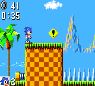La consola que inició la histórica rivalidad con Nintendo y llevó los gráficos de 16 bits a los hogares.
1990s: Revolución 3D y Expansión Global
La década de 1990 marcó un punto de inflexión en la historia de los videojuegos, con la llegada de los gráficos tridimensionales y la expansión global de la industria. Las consolas y computadoras comenzaron a ofrecer experiencias mucho más inmersivas gracias a los avances tecnológicos en hardware y almacenamiento.
Sega se consolidó como uno de los grandes competidores con Sonic the Hedgehog (1991), un personaje veloz y carismático que se transformó en ícono cultural y rival directo de Mario. Por su parte, id Software revolucionó el género de disparos en primera persona con Doom (1993) y Quake (1996), títulos que sentaron las bases de los shooters modernos y popularizaron el juego en red. En 1994, Sony ingresó al mercado con la PlayStation, apostando por el formato CD-ROM, que ofrecía mayor capacidad de almacenamiento para gráficos, música y cinemáticas. Esta decisión marcó el inicio de una nueva era para los videojuegos domésticos y posicionó a Sony como un líder de la industria. Nintendo, por su parte, respondió con la Nintendo 64 (1996), que llevó el salto al 3D a otro nivel con Super Mario 64, un título innovador que redefinió el diseño de mundos abiertos y la jugabilidad tridimensional.
Los videojuegos para PC también vivieron una época dorada: títulos como StarCraft (1998), Diablo (1997) y Half-Life (1998) demostraron el potencial del gaming en computadoras, ofreciendo experiencias profundas y complejas. Además, el auge de Internet permitió el surgimiento de los primeros modos multijugador en línea, que transformaron la forma en que los jugadores se conectaban y competían en todo el mundo. En conjunto, los 90 fueron una década de innovación y expansión que sentó las bases para la industria moderna, combinando avances tecnológicos, nuevos géneros y una creciente comunidad global de jugadores.

Super Mario 64
Super Mario 64
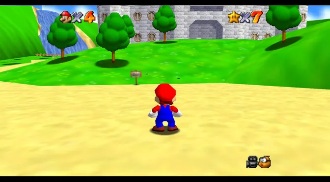El salto definitivo al mundo 3D. Nintendo revolucionó el diseño de juegos con libertad de movimiento y escenarios tridimensionales.

PlayStation
PlayStation
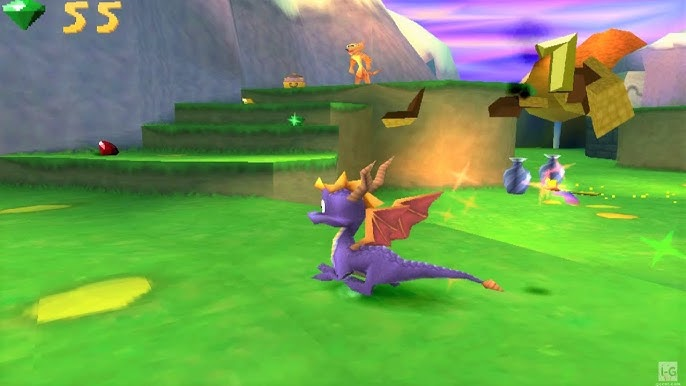La consola que cambió la industria. Introdujo el uso del CD-ROM y marcó el inicio de la era moderna del gaming.
DOOM
DOOM
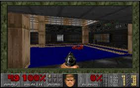El pionero de los shooters en primera persona. Su acción intensa y sus partidas en red definieron un nuevo género.
2000s: La Era Online y la Distribución Digital
La llegada del nuevo milenio transformó profundamente la manera de jugar. Los videojuegos dejaron de ser experiencias solitarias para convertirse en un fenómeno conectado, social y global. La PlayStation 2 (2000) dominó la generación con un catálogo inmenso y compatibilidad con DVD, convirtiéndose en la consola más vendida de la historia. Su éxito demostró que los videojuegos ya eran una forma de entretenimiento masivo. En 2001, Microsoft se unió a la competencia con la Xbox, y pronto lanzó Xbox Live (2002), una plataforma que permitió jugar en línea con personas de todo el mundo, descargar contenido y comunicarse mediante chat de voz, sentando las bases del gaming social moderno.
Mientras tanto, en PC, World of Warcraft (2004) revolucionó el género multijugador masivo en línea (MMORPG), reuniendo a millones de jugadores en un universo persistente y compartido. Paralelamente, Steam (lanzado entre 2003 y 2007) cambió para siempre la industria con su sistema de distribución digital, eliminando la necesidad de discos físicos y facilitando la compra, actualización y gestión de juegos. En 2006, Nintendo Wii sorprendió al mundo con su control por movimiento, acercando los videojuegos a un público mucho más amplio, incluyendo familias y personas que nunca habían jugado antes.
Hacia finales de la década, el surgimiento de los teléfonos inteligentes y títulos como Angry Birds (2009) marcaron el comienzo del auge de los juegos móviles, abriendo una nueva etapa donde el gaming se volvió accesible en cualquier momento y lugar. La década de los 2000 consolidó a los videojuegos como un medio universal, conectando comunidades, creando nuevas formas de distribución y expandiendo su alcance a todos los rincones del planeta.
PlayStation 2
PlayStation 2
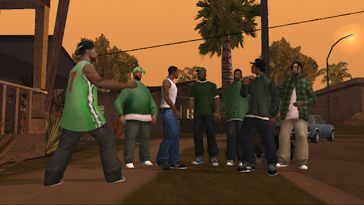La consola más vendida de todos los tiempos. Su catálogo inmenso marcó una generación entera de jugadores.

World of Warcraft
World of Warcraft
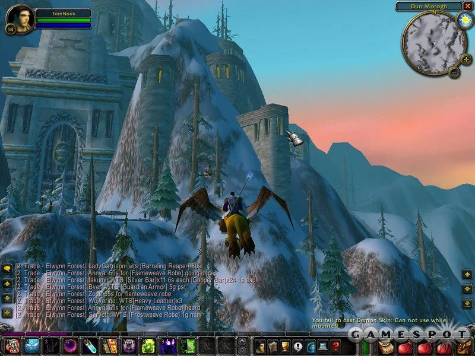El MMORPG más influyente. Millones de jugadores compartieron aventuras en un mismo mundo virtual.
Nintendo WII
Nintendo WII
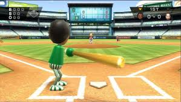Revolucionó la jugabilidad con sensores de movimiento, haciendo del juego una experiencia activa y familiar.
2010s: Creatividad, Streaming y Cultura Global
Durante la década de 2010, los videojuegos alcanzaron un nuevo nivel de madurez artística, diversidad creativa y conexión social. Ya no eran solo entretenimiento: se consolidaron como una forma de cultura global que integraba arte, comunidad y tecnología.
El fenómeno Minecraft (2011) redefinió la idea de lo que podía ser un videojuego. Con su estética simple y su libertad total para construir, explorar y crear, demostró que la creatividad del jugador podía ser más poderosa que los gráficos realistas. La escena indie también floreció como nunca antes. Juegos como Undertale (2015), Celeste (2018) y Hollow Knight (2017) mostraron que estudios pequeños podían crear experiencias profundas, emocionales y originales, impulsadas por la pasión de sus desarrolladores y la distribución digital.
A la par, el surgimiento de Twitch (2011) y otras plataformas de streaming cambió radicalmente la forma de vivir los videojuegos. Ver a otros jugar se volvió una experiencia social y global, dando origen a nuevas figuras como los streamers y creadores de contenido. Los esports alcanzaron una popularidad sin precedentes, con competencias de títulos como League of Legends, Overwatch y Counter-Strike: Global Offensive, seguidas por millones de espectadores en todo el mundo. En 2017, Nintendo Switch innovó al combinar el juego portátil y de sobremesa en un solo dispositivo, ofreciendo flexibilidad y accesibilidad sin precedentes. Mientras tanto, fenómenos culturales como Fortnite (2017) y Among Us (2018) demostraron el poder de los videojuegos para reunir comunidades globales y convertirse en espacios sociales compartidos, especialmente en la era digital.
Minecraft
Minecraft
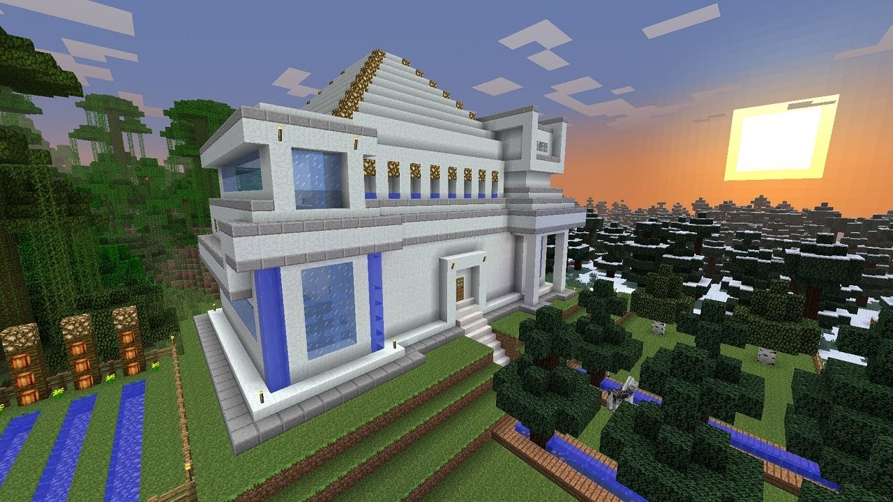Demostró que la creatividad del jugador podía ser el motor principal de un videojuego.

Nintendo Switch
Nintendo Switch

Innovó al unir el juego portátil y doméstico en una sola consola versátil y accesible.
Fortnite
Fortnite
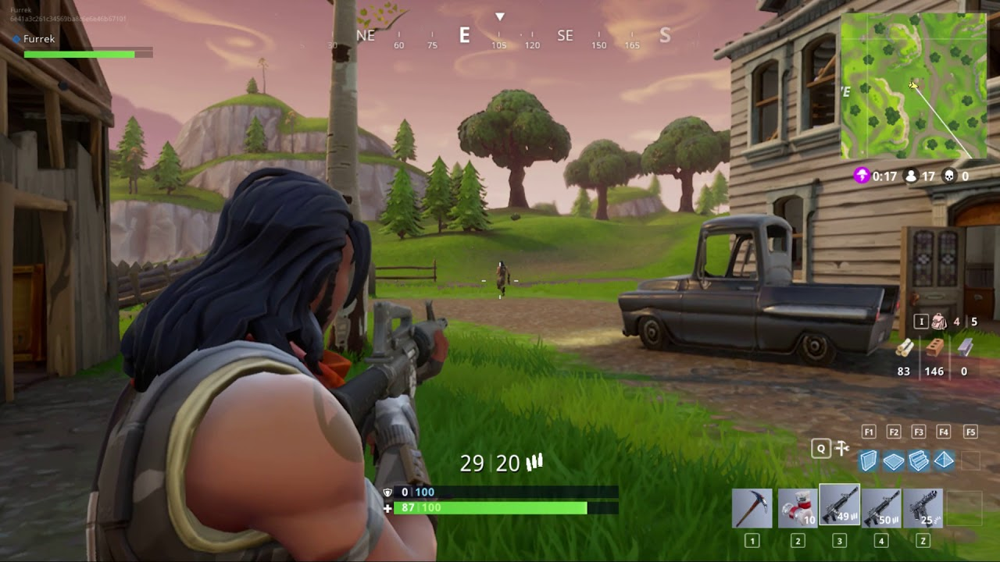Unió a millones de jugadores en línea y convirtió el videojuego en un evento cultural mundial.
2020s: Cloud Gaming, Realidad Virtual y Futuro
La década de 2020 representa la vanguardia tecnológica de los videojuegos. En pocos años, el salto gráfico, la potencia del hardware y la integración de nuevas tecnologías redefinieron la forma de jugar, crear y conectarse.
El lanzamiento de PlayStation 5 y Xbox Series X/S marcó una nueva generación de consolas, ofreciendo gráficos casi realistas, tiempos de carga instantáneos gracias a los SSD y una inmersión total mediante audio 3D y mandos hápticos. Estas consolas simbolizan el punto más alto alcanzado por el gaming doméstico tradicional.
Al mismo tiempo, el Cloud Gaming —con plataformas como Xbox Cloud Gaming, NVIDIA GeForce Now y PlayStation Plus Premium— permitió jugar desde cualquier dispositivo, eliminando la necesidad de consolas o PCs potentes. El juego se volvió verdaderamente accesible y global, con experiencias transmitidas directamente desde la nube.
La pandemia de COVID-19 reforzó el papel social de los videojuegos. En un contexto de aislamiento, millones de personas recurrieron al gaming como medio para conectarse, comunicarse y compartir experiencias. Juegos como Animal Crossing: New Horizons o Among Us se convirtieron en espacios virtuales de encuentro.
Por otro lado, la realidad virtual (VR) y la realidad aumentada (AR) avanzaron con gran fuerza. Dispositivos como Meta Quest 2 y PlayStation VR2 ofrecieron experiencias cada vez más inmersivas, mientras que la inteligencia artificial comenzó a revolucionar el desarrollo, la personalización y el comportamiento de los mundos digitales.
El futuro de los videojuegos combina arte, tecnología y creatividad interactiva sin límites. Hoy, los videojuegos ya no son solo una forma de entretenimiento: son cultura, comunicación y una nueva manera de vivir experiencias.
PlayStation 5 y Xbox Series X
PlayStation 5 y Xbox Series X
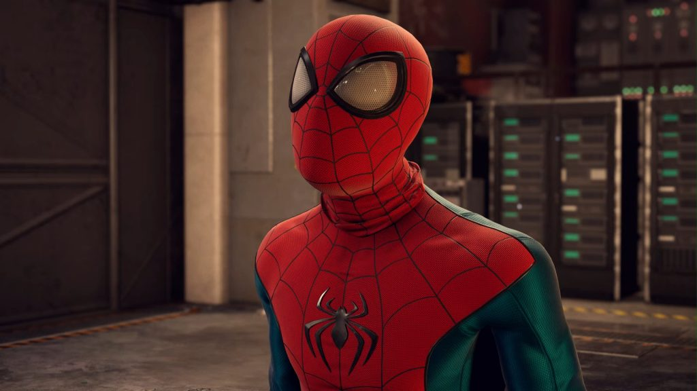La nueva generación de consolas llevó los gráficos y la velocidad a niveles nunca antes vistos.

Cloud Gaming
Cloud Gaming
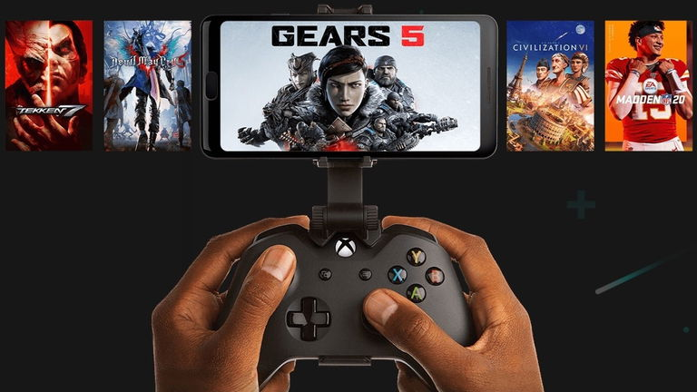Permite jugar desde cualquier dispositivo gracias a la transmisión desde la nube.

Meta Quest
Meta Quest
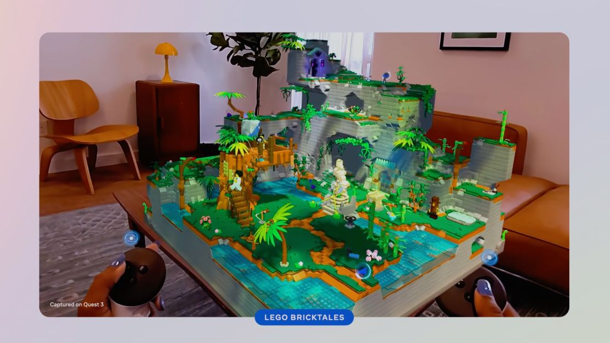La realidad virtual lleva al jugador dentro del juego, fusionando tecnología e inmersión total.